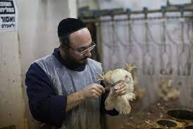

Los Judíos tienen rabinos en vez de sacerdotes. Ellos se especializan en él estudio de las lecturas, la ley Judía y dirigen espiritualmente a la sinagoga y su comunidad.
Rabino, el "cura" judio
Existen técnicamente dos Grandes Rabinos, uno ashkenazi y otro sefardí, aunque es bastante controversial y se dice que fueron impuestos por él cristianismo para tener algún vocero de la religión con quien negociar, como una Papa catolico.
Shlomo Moshe Amar, el Gran Rabino Sefardi de Israel
Siendo los rabinos la forma de autoridad más aceptada, ellos se encargan de todas las decisiones en las comunidades en las que viven, en vez de haber una cadena de comando donde pueden venir decisiones desde él papado mediante una cadena de comando (hay algunas que solo las puede tomar él Papá). Es una religión descentralizada. A parte de rabino y Gran Rabino hay dos cargos más, él Shojet que es él matarife y se encarga de preparar la carne especial (carne Kosher). Puede ser más que solo Shojet, hay veces en donde han llegado a ser rabino a demás y no fue tan raro.
Shojet preparando carne kosher
Finalmente, él jazan. Se encarga de la música y los cantos en la celebración y son mucho más estudiosos que los que toman la misma responsabilidad en las Iglesias Cristianas de hoy día. Varias veces han sido conocidos como cantantes profesionales.
Jazan, quien guia los cantos en la sinagoga